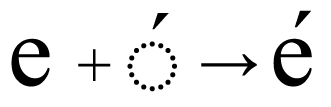
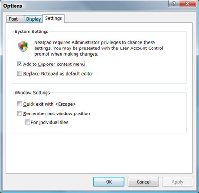

Unicode Text Editing
Unicode character input presents some unique problems for text-editors - issues that did not have to be considered when the first ASCII editors were written. The main difficulties are the Unicode ‘combining sequences’ - where multiple code-points are combined to form a single selectable ‘character cluster’. Modifications to a Unicode text-file require careful coding to ensure that character cluster-boundaries are preserved and that no invalid sequences are inadvertantly introduced into the document. The Uniscribe API will again be used to aid us in this area.
Character input (of any kind) is not possible without some form of data-structure to manage and represent any alterations to the document. The last tutorial saw the implementation of a piece-table data structure which implements three basic edit operations: insert, erase, and replace. Unlimited undo and redo are also supported. The sequence class was presented which encapsulates the piece-table and these basic editing operations within a single C++ object. The purpose of this tutorial is therefore to document the modifications required by Neatpad to support the piece-table editing model.
Unicode character input
We already looked at keyboard navigation in Part 16 - Keyboard Navigation, in which we discussed caret movement within a Unicode document, and we briefly looked at the various Win32 character-input messages that a program can encounter when receiving keyboard input:
| Characters | Dead Characters | |
| UTF-16 Character | WM_CHAR | WM_DEADCHAR |
| UTF-32 Character | WM_UNICHAR | |
| Input Method Editor | WM_IME_CHAR | |
| System Character | WM_SYSCHAR | WM_DEADSYSCHAR |
Even though the WM_CHAR message has been around since the first versions of Windows, it is still the most appropriate way for a Win32 application to receive character input. For any UNICODE application, the WM_CHAR message sends a single UTF-16 character value instead of a plain ANSI character. This is perfect for us, because Neatpad is already an UTF-16 (wide-character) application. Even complex scripts will be handled seemlessly because keyboard input for these languages is usually associated with an Input Method Editor (IME) - which will translate any ‘complex’ key-strokes into the appropriate stream of UTF-16 characters, without any extra work on our part. The Windows Input Method Editor will be the subject of a future tutorial.
The other messages look interesting but are not really necessary. Supposedly the WM_UNICHAR message sends UTF-32 characters rather than the 16bit WCHARs - however I have never seen WM_UNICHAR being sent to a program, even on a XP machine. I suspect that this is a message that is sent by other applications (such as IME’s) rather than the OS itself. Likewise the WM_IME_CHAR message is only sent under special circumstances. Although we will ignore these additional input-messages, we will not be losing any functionality by simply handling WM_CHAR at this point.
The code below shows the standard method of handling character-input in a Win32 program:
LONG TextView::OnChar(UINT nChar, UINT nFlags)
{
// do something with 'nChar'
return 0;
}
case WM_CHAR:
return OnChar(wParam, lParam);
We don’t need to do anything special to receive Unicode input. As long as we compile with the UNICODE macro defined we will receive UTF-16 characters. Unicode values outside of the BMP (i.e. > 0xFFFF in value) will be sent as two separate messages, one for each surrogate character. However it is very unlikely that a user will manually enter two surrogate values separately - more than likely they will be using an Input Method Editor, and it will be the IME that breaks their keyboard input into UTF-16 units.
Regardless of how the text is entered, all we need to do is receive each WM_CHAR as it is sent to the TextView and process it accordingly. Usually that’s where the tricky part comes in, but fortunately we now have the piece-chain sequence class which will enable us to make edits to the underlying document each time a character is received.
Integrating the Piece-table
My first attempt at integrating the piece-table into Neatpad went quite smoothly. I’m not completely certain it’s the best way to do things in an editor but at least it shows that the idea can work in practice. The image below illustrates the various components of the text editor as it stands at the moment.

The basic idea has been to incorporate the piece-table in a manner that caused minimal impact on the rest of the design. To achieve this aim I layered the piece-table directly on top of the raw file content. The piece-table (or sequence class) therefore presents the underlying file in it’s raw form - as a sequence of BYTEs rather than WCHAR units. This makes sense for the moment, because the TextDocument can still accesses the file in it’s raw form prior to converting it to UTF-16. The only difference now is that the TextDocument can affect changes to the raw file through the piece-table as well as read it’s content.
Not everything is as smooth as it seems however. The big problem with this design is the reliance on the line-buffer, which must be reinitialized every time a change is made to the piece-table. This is because the line-buffer indexes directly into the piece-table, and any change to the piece-table (such as an insert or delete) effects the layout of the file. Therefore any change to the piece-table will require the line-buffer to be modified appropriately. This is not really noticable on very small files, but any file larger than a few kb suffers serious performance problems. You will notice this problem with the text-editor download this time - any time a single character is inserted there will be a noticable delay as the line-buffer is reinitialized. Of course this is unacceptable and this issue will be addressed fully in the next tutorial.
Deleting text
Even though text-input is the primary function of a text-editor, text-deletion is an important aspect too. So before we look at how text is entered I will describe some of the issues involving text deletion.
There are three basic forms of ‘delete’ that a Unicode text-editor must consider. The first is the deletion of a static__range of text - usually defined as the user’s current selection. The key detail here is that the starting and ending positions of the deletion range are well defined, and we rely on the existing keyboard and mouse navigation routines to always place the cursor at proper cluster boundaries. The other two delete methods are Forwards delete and Backwards delete. These last two operations typically map to the standard <delete> and <backspace> keys. We will discuss these last two forms of deletion a little further down.
Text-deletion in Neatpad is made slightly more complicated because of the way Neatpad currently manages the underlying data in the document. Neatpad is basically a multi-format text-editor which supports ASCII, UTF-8 and UTF-16 formats. So even though all text coordinates are in UTF-16 units (in the TextView), the TextDocument must map these coordinates to whatever format the document is in. (This design was discussed in Part 9 - Unicode Text Processing). Deleting a range of text in the document requires Neatpad to convert the character-offsets into the appropriate physical offsets in the underlying file.
The TextDocument performs this conversion by accessing the Line-Buffer component of the editor. Although lookups through the line-buffer occur in O(log N) time, this is a relatively costly operation for larger files. This presents a problem, because our delete operation takes as input two values - the start and end of the range of text to delete - and requires two lookups through the line-buffer. It’s not ideal but this is just the way the editor has evolved up to this point. Remember that the whole reason these conversions to/from UTF-16 are necessary is because I want Neatpad to support multiple file-formats. UTF-8 is the real killer here because it doesn’t correspond at all to UTF-16, making the conversions an absolute necessity. It is quite likely that I will move away from this ‘dual coordinate’ design!
In an ideal world we could load a UTF-8 file entirely into memory, converting it to UTF-16 when it is first opened so that there would be no conversion issues at runtime. This is how most editors work. It is only because of my intention to support ‘large files’ that we have these issues. Obviously a multi-gigabyte text-file will not fit into memory all at once and will require us to page the file into memory in smaller units, making the runtime conversions to/from UTF-16 a requirement. But I really don’t like the ‘dual coordinate’ system that I have at the moment (it’s very messy to deal with), and because of this I may decide to limit ‘large-file’ support (on-disk editing) to just plain ASCII and UTF-16. As always I’d appreciate any feedback people may have to offer.
Backspace vs Delete
This is the title of one of Michael Kaplan’s Sorting it all out blog entries. You should take the time to read Michael’s blog as there is a wealth of high-quality information regarding Internationalization. Many of the topics on his site have been tremendously helpful when it came to understanding Unicode.
Although delete and backspace are both methods of text-deletion, their operations are subtly different in practice. In fact a better way to describe their actions are Forwards delete and Backwards delete, as these are the directions (in logical text-units) that the cursor moves in each case. The differences can be highlighted by examining a string of Unicode text containing combining sequences. As an example we will consider the word “Déja”:

As you can see the text is made up of five code-points - with the combining accute accent (U+0301) shown as a separate character. In practice of course, the accute-accent is positioned above the letter ‘e’ and together they are rendered as a single grapheme cluster:

Fowards-delete is the first case to consider, and a basic text-editor would implement this operation by removing a single Unicode character each time the <delete> key was pressed. However if we look at the ‘Déja’ example we will see it is a little more complicated than that:
Imagine that the cursor is positioned at the start of the letter ‘e’. If we hit <delete> then this single letter would be erased as expected. However if Neatpad just deletes a single UTF-16 character each time delete is pressed, the combining accute-accent character would not be removed. In fact it would become attached to the letter preceeding the ‘e’ (the letter ‘D’), resulting in the illegal Unicode sequence shown above.
Of course the logical thing to do in these scenarios is to delete the base character and any combining characters that might follow. The same behaviour would also be used for UTF-16 surrogate pairs so that both surrogate-characters are deleted. The Uniscribe ‘logical attribute list’ is used to identify these character boundary conditions.
Back-delete is slightly different in practice. Imagine this time that the caret has been placed in-between the accute accent and the letter ‘j’. Performing a back-delete using the same logic as before would remove the combining character as well as the base character. Doing so is not incorrect, but a nicer alternative is to remove just the combining character, leaving the ‘e’ untouched:

Deleting single Unicode characters in response to a <backspace> is preferable because only the combining-character is removed from the end of the sequence, leaving the base character intact. Deleting the entire sequence is not necessary and would only cause the user frustration if they had only mistyped this one character. Unfortunately blindly peforming a single-character delete is not sufficient because we must still consider UTF-16 surrogate-pairs - which must be treated (and deleted) as an atomic unit of text. The blog post I referred to earlier discusses this scenario and highlights a bug in several Windows applications which don’t handle surrogate-pairs properly in this case.
Supporting Unicode delete operations requires us to inspect the text-stream we are modifying and handle any combining sequences (including surrogrates) appropriately. Fortunately because we are using Uniscribe we can again refer to the logical-attribute list which is calculated for each line - remember that this list identifies cluster boundaries and enables us to easily detect combining sequences.
Line-termination is another scenario that must be delt with in addition to the surrogate / combining-sequence issue. It’s not really a problem in itself, other than special care must be taken when carriage-return/line-feed combinations are encountered. Obviously CR/LF pairs must be treated as a single unit - but really they are handled in the exact same way as surrogate-pairs.
Because Neatpad’s piece-table is not a line-oriented data structure there are no further issues to deal with. In contrast, an editor that utilized a ‘linked list of lines’ model would require special logic to manipulate the list-nodes whenever lines (CR/LFs) are added/removed from the file. Neatpad doesn’t have this problem as it’s underlying data structure is a simple flat stream of characters.
Inserting text
Neatpad receives character input via the TextView::OnChar function. This function is defined in TextViewKeyInput.cpp and is shown below:
LONG TextView::OnChar(UINT nChar, UINT nFlags)
{
WCHAR ch = (WCHAR)nChar;
// translate carriage-returns to CR/LF combinations
if(nChar == '\r')
PostMessage(m_hWnd, WM_CHAR, '\n', 1);
// input this single character at current cursor position
EnterText(&ch, 1);
// 'break' piece-table optimizations whenever we input a new line
if(nChar == '\n')
m_pTextDoc->m_seq.breakopt();
NotifyParent(TVN_CHANGED);
return 0;
}
TextView::OnChar simply passes each wide-character it receives to the more general-purpose EnterText function, which is also used by the clipboard-related code:
BOOL TextView::EnterText(TCHAR *szText, ULONG nLength)
{
ULONG selstart = min(m_nSelectionStart, m_nSelectionEnd);
ULONG selend = max(m_nSelectionStart, m_nSelectionEnd);
BOOL fReplaceSelection = (selstart == selend) ? FALSE : TRUE;
switch(m_nEditMode)
{
case MODE_READONLY:
return 0;
case MODE_INSERT:
// remove selection if necessary
if(fReplaceSelection)
{
m_pTextDoc->m_seq.group();
m_pTextDoc->erase_text(selstart, selend-selstart);
m_nCursorOffset = selstart;
}
// enter the text!
m_pTextDoc->insert_text(m_nCursorOffset, szText, nLength);
break;
case MODE_OVERWRITE:
// overwrite happens here
break;
}
m_nCursorOffset += nLength;
return TRUE;
}
It is the responsibility of EnterText to take the appropriate action depending on the state of the current edit-mode - which can be either MODE_READONLY, MODE_INSERT or MODE_OVERWRITE. Only ‘text insert’ is shown above - the overwrite is described later on but is much the same in terms of implementation.
ULONG TextDocument::insert_text(ULONG offset_chars, WCHAR *text, ULONG length)
{
ULONG offset_bytes;
offset_bytes = charoffset_to_byteoffset(offset_chars);
return insert_raw(offset_bytes, text, length);
}
The key detail to highlight at this stage is what the TextDocument::insert_text function does with the WCHAR buffer that is passed to it. The first thing it does is to convert the supplied character-offset into a raw-byte offset. Once insert_text knows where to physically insert the text into the piece-table, the insert_raw function is called - which then converts the UTF-16 string into the appropriate text-format (or leaves it unchanged if the file is already UTF-16). With the text now in the same format as the underlying file’s, it can finally be inserted into the piece-table.
Overwriting text
Whilst all text-editors support an ‘insert’ mode, a large proportion also provide an ‘overwrite’ mode as well. Neatpad’s piece-table implementation already provides a ‘replace’ function - which combines erase+insert into a single atomic operation. The prototype is shown below:
size_w sequence::replace(size_w index, seqchar *buffer, size_w length)
The piece-table’s replace function works by first erasing the specified range of text (between index and index+length), and then inserting the data in buffer back into the same location. The result is a ‘strict’ overwrite of binary data, with the file’s length unchanged at the end of the operation. This behaviour is a hang-over from HexEdit’s original design.
Overwriting text in Unicode is more complicated than simple byte (or character) replacement, as I found out when I finally started editing files with Neatpad. Text-overwrite must follow the exact same rules that we already discussed with ‘forward deleting’. That is, we must respect cluster boundaries and combining sequences when we are replacing text. Consider the following example, in which the letter ‘o’ is entered whilst in ‘overwrite’ mode.

Ultimately this results in a scenario where we may need to delete several UTF-16 characters for every single character we type in at the keyboard. In other words, a ‘replace’ operation in a Unicode text editor could very well change the length of the file that it is editing. This is in stark contrast to a binary editor which must never change the length of any file it is editing. Unfortunately that’s just the way text-editors work and we must be prepared to deal with these eventualities.
Replacing past the end of line
Replacing (overwriting) past the end-of-line is another scenario that must be catered for. Once again it wasn’t until I was actually using the editor that I realised this was an issue at all. Consider the following two lines of text as a simple example, with the caret positioned at the end of the first line:

Although the editor has split the text across two lines, remember that Neatpad’s piece-table presents the file contents as a simple stream of text:
Using the existing forward-delete logic in ‘overwrite mode’, the CR+LF combination would be deleted when the next character is input. Erasing the line-terminater in this way would have the effect of joining the two lines together:
Obviously this is not the behaviour we expect for a text editor. Neatpad must therefore give CR/LF characters special treatment whilst in overwrite mode. In fact, any entered text that immediately preceedes a CR/LF must actually be inserted into the document (extending the line length), regardless of whether the editor is in overwrite mode or not.
The CR/LF scenario highlights the same deficiency in the sequence::replace function that we first saw when overwriting combining-sequences. The underlying problem is that the number of bytes (or characters) we want to delete does not have to equal the number of characters we are replacing them with. We therefore need to be able to exactly control the number of bytes to delete for any given replace operation:
sequence::replace( size_w index,
const seqchar * buffer,
size_w length,
size_w erase_length
);
Adding the erase_length parameter now gives us the flexibility to handle any form of replace operation. When replacing over combining sequences this parameter would be set to the number of bytes that the combining sequence occupies in the file. For the CR/LF scenario above, this parameter would be set to zero.
Optimized insert and replace
You may be wondering why we couldn’t just have called sequence::insert rather than sequence::replace for the example above. The reason is simple: Neatpad’s piece-table is designed to optimize each insert/replace operation, by coalescing consecutive edits (of the same type) into a single operation - in order to keep the number of spans in the piece-table to a minimum at all times. If we started off calling sequence::replace when entering text, but switched to calling sequence::insert when dealing with CR/LFs, this would break the optimized operation into a ‘replace’ and an ‘insert’ operation. This is not an intuitive thing for the user to understand - they would expect their overwritten text to be treated as a single operation. Rather than complicate matters I simply decided to extend the capability of the sequence::replace function.
Whilst we are on the subject of CR/LF combinations and sequence-optimizations, it is probably worth mentioning what happens when the user actually enters a CR/LF into the document (rather than deleting it). Neatpad’s piece-table would naturally take the CR/LF characters and coalesce the edit-operation where possible. If the user entered several lines of text consecutively in one go (without undoing/deleting/redoing anything), all lines of text would be optimized into one operation. The consequences of this optimization would become noticable when the user subsequently decided to undo the text-insertions - when they would find that all the lines of text they entered would be undone in one go.
It turns out that this is not actually very intuitive. Instead what is preferable is for the sequence-optimizations to be ‘broken’ whenever a new line is started - in other words the sequence should only optimize whole lines of text and nothing more. To support this model a new function sequence:: breakopt was introduced:
void sequence::breakopt()
This function is called whenever a single carriage-return is entered into the document. The result is more natural because editors are line-oriented by nature. Breaking the sequence-optimization in this way allows each line to be undone/redone individually. This does result in more spans being introduced into the piece-table - but there will always be a trade off between usability and performance. In my opinion it is better to improve the user’s overall experience rather than forcing optimization behaviours on them that they don’t understand, and don’t even care about.
Undo and Redo
The ability to perform undo and redo has always been a fundamental aspect for many text editors. Some do it better than others - with the best editors usually having undo support designed in from the very start. The piece-table implementation developed for Neatpad provides unlimited undo and redo - that is, any successful modification to the text-sequence is guaranteed to be undoable. Whilst this is a very nice feature in itself, an interesting issue is raised when the piece-table is integrated into Neatpad.
The issue is that of selection-highlighting and caret placement. You may or may not have noticed, but when you perform an undo (or redo) in your favourite editor, the text-caret is automatically repositioned to the offset where the last action occured. This means that for every action taken on the text-sequence, the piece-table must keep track of the logical offsets that were specified in those operations. When the sequence is restored due to an undo, the sequence must be able to provide details of what range of data in the sequenece was modified as a result of the undo/redo.
As a quick example, load up your favourite editor and open a file. Select a range of text and delete it, then reposition the cursor somewhere else in the file. Now hit ‘undo’ in the editor. The range of text that you just deleted will be inserted back into the file and will reselected as it was just before the edit took place. To achieve this goal, the sequence class stores the offset and length of each operation in the corresponding span_range object. The sequence class provides two methods which provide access to these internal details:
size_w sequence::event_index();size_w sequence::event_length();
The TextView will call these two methods any time an undo or redo occurs in the editor. The event_index() function provides the logical offset of the last operation, whilst event_length() provides the length of data involved. Any time an undo/redo occurs, the internal state of the sequence will change, and these two functions will return the appropriate values that represent these actions. Whilst the only reason this information is needed is for the caret can be repositioned during undo/redos, it is still an important aspect of the user interface.
Caret Placement
It has been difficult to test Neatpad’s keyboard navigation behaviour because up until this point it was not possible to enter any text into the editor. Well it turns out there was a bug in the way the caret was being positioned in bidirectional text. I was never quite sure I had the logic right, and using Neatpad to edit mixed English / Arabic text confirmed this.
The Uniscribe topic Displaying the Caret in Bidirectional Strings (in MSDN) describes this problem by saying that “in bidirectional text, the caret position between runs of opposing direction is ambiguous.” What this means is that for a string that contains both English and Arabic text, for certain character offsets in the string the caret can appear in more than one visible position.
Let’s look at the familar “HelloيُساوِيWorld” example again, with the caret positioned at offset 5 in the string:

You will see from the example above that there are two text-caret positions. This ambiguity arises because the last letter of ‘Hello’ immediately precedes the first letter of ‘يُساوِي’. So because the Arabic string is printed right-to-left there are two visible positions for the caret, depending on whether it is considered to follow the ‘o’ of ‘hello’ or to precede the first letter of ‘يُساوِي’.
In Unicode text one can therefore think of the caret being displayed at the leading or trailing edge of a character. Another way to think of this is that the caret position is dependent on whether the caret is advancing forwards or backwards through the text. Any text editor supporting bidirectional text must therefore make this distinction as it is positioning the caret. It is not enough to simply convert the cursor offset to a visible x-coordinate. The direction the cursor was moving must also be taken into account:
if( fAdvancing )
ScriptCPtoX(nCursorOffset - 1, TRUE, ..., &iCaretX);
else
ScriptCPtoX(nCursorOffset, FALSE, ..., &iCaretX);
The logic is actually quite simple: if the caret is advancing forwards, it is positioned at the leading edge of the preceding character, whereas if the caret is moving backwards it is positoned on the trailing edge of the current character. This new logic is represented in Neatpad with a change to the UpdateCaretOffset function, which is used internally by the TextView:
VOID TextView::UpdateCaretOffset( ULONG nCursorOffset,
BOOL fAdvancing,
int * outx,
ULONG * outlineno )
The fAdvancing parameter is now required in addition to the character-offset. UpdateCaretOffset applies the logic shown above to position the caret correctly for bidirectional strings. It wasn’t very difficult to adjust the keyboard navigation code either - the only change necessary was to set the fAdvancing variable according to the direction the cursor is moving. Keys such as VK_LEFT and VK_BACKSPACE are considered to move backward through the text, so fAdvancing is set to FALSE. For all other keys fAdvancing is set to TRUE. For example:
case VK_LEFT:
fAdvancing = FALSE;
nCursorOffset --;
break;
case VK_RIGHT:
fAdvancing = TRUE;
nCursorOffset ++;
break;
Vista is here
Like it or not Vista’s arrival is imminent, and whilst I haven’t quite made up my mind whether I’m a fan myself, Neatpad does require a couple of modifications in order to make it work correctly under this new operating system. The issue revolves around Administrator privileges and Vista’s new User Account Control prompt. The problem occurs when Neatpad’s Options dialog is invoked - because a couple of the settings (“Add Neatpad to Explorer context menu” and “Replace Notepad as default editor”) require write-access to the HKEY_LOCAL_MACHINE branch in the registry. Obviously this requires Administrator privileges, and Vista’s solution is to require applications to conform to the new User Account Control guidelines.

The first noticable change is the new Vista Shield Icon - which indicates to the user that elevation to Administrator via the UAC prompt will be necessary. There are three mechanisms available to application programmers which invoke the UAC prompt:
- Embed a UAC manifest (an XML file) into an executable’s resources that indicates which elevation level is required. The choices for the
requestedPrivilegessection are ‘asInvoker’, ‘requireAdministrator’ and ‘highestAvailable’. Whilst we could employ this method to ‘requireAdministrator’, the problem is that the UAC prompt would be displayed every time Neatpad was run. This would be very frustrating to the user, especially as the only time Administrator access is required is when the two ‘system settings’ need to be changed. This is a sledge-hammer approach that is only intended to support older applications and is not suitable for a simple utility such as Neatpad. - The second option is to use the new
CoCreateInstanceAsAdminfunction call. This new COM API allows a program to instantiate a COM object at Administrator level (assuming that the current user is a member of the Administrator’s group of course!). The COM object lives inside a separate process and allows the calling application to make controlled calls into the object. Whilst this is a technically neat way of doing things there are two problems. Firstly, we require an external DLL to be shipped, and secondly we have to be Administrator in order to install the COM DLL in the registry in the first place. This method is best suited for larger applications that use a proper Windows installer. - The final option is to request a separate process be spawned at Administrator level. The
ShellExecuteExfunction can be called in this case, using the “runas“ verb. When running under Vista, this will cause the UAC prompt to be displayed prior to launching the new executable. The child process will run with Administrator privileges, assuming that the user authorised the elevation.
Neatpad uses option#3 but instead of launching a separate program, it simply attempts to re-spawn itself. A special command-line option (“-uac”) is used to instruct the new instance not to display it’s GUI. In this special mode, Neatpad sets the appropriate registry-keys under HKEY_LOCAL_MACHINE and exits. The registry access succeeds because the respawned Neatpad will be running as Administrator.
Conclusion
Unicode text-editing is a complicated subject, mostly due to the occurance of combining sequences. Fortunately the Uniscribe API vastly simplifies the amount of work we might otherwise have to do - I certainly wouldn’t look forward to writing an editor without this kind of language support. The topic this time was also helped a great deal by having a solid piece-table implementation which plugged in very neatly to the editor design. I strongly advise anyone writing an editor to invest the time in developing a functional back-end - which should include all of the necessary edit operations as well as undo/redo support.
There is still a long way to go before Neatpad’s editing is fully complete. The line-buffer implementation needs an urgent overhall and this will be the topic of the next tutorial. Following on from this will be memory-management for large-file editing, which should hopefully be a very simple topic because the piece-table lends itself very well to on-disk editing.

Neatpad running under Windows Vista, using the Aero Glass theme.
I wrote last time that I was thinking of migrating to Visual Studio 2005 and C++ templates. Thankyou first of all to everyone who provided feedback on this topic - however at this point I decided to stick with VC6 for the time being. Firstly, C++ templates are unnecessary because the sequence class is only being used to store raw bytes. And secondly, VC2005 executables introduce a dependency on a new C-runtime DLL (MSVCRT8.DLL) which is not present on Windows systems by default. So rather than complicate matters the Neatpad project will remain VC6 compatible - but it will still build cleanly under VC2005 as well.
In the meantime I’ve come across a few interesting editors which are worth a mention. The first is JujuEdit from Jujusoft. It’s freeware but closed-source. The editor has ‘very large file support’ - files up to 2Gb - and is actually very impressive in it’s large-file handling. Next is Intype which looks to be an interesting editor still in development, and also e - the collaborative text editor for Windows, which has an interesting approach to undo/redo. Thanks to Franck Marcia for providing these last two links.
Thanks also to everyone who pointed me at Colorer - a very impressive open-source library for regular-expression-based syntax colouring. When the time comes to implement syntax-colouring in Neatpad this library will hopefully make things much easier.